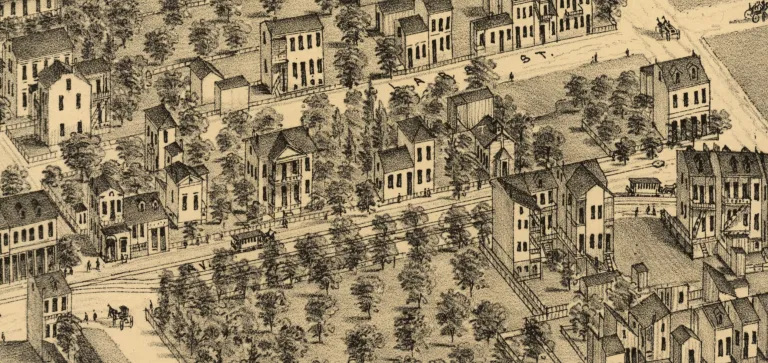

Discover why Dutchtown is the most populated neighborhood in South St. Louis.
Explore the neighborhoodThe area now called Dutchtown was first occupied by German settlers who moved south of Downtown St. Louis in the early 19th century. The name Dutchtown is derived from Deutch meaning German. Dutchtown is home to over 15,000 residents and is St. Louis's densest neighborhood; this is attributed to the packed blocks full of old brick German homes. Dutchtown has changed drastically over the past two hundred years, but it is still a beloved neighborhood.

While St. Louis is known as a Black and White city, South City has a diverse group of residents. Dutchtown is no exception. Dutchtown is primarily black, but has a sizeable Arab population. South Grand in Dutchtown has many Arab stores, and just north of Dutchtown is St. Louis's mexican area of Cherokee Street. St. Louis City's reported statistics are not in-depth, but the following tables showcase Dutchtown's distinct population.
| Year | Dutchtown Population | St. Louis City Population | Context |
|---|---|---|---|
| 1990 | 17,943 | 396,685 | First year neighborhood census data tracked. |
| 2000 | 17,222 | 348,189 | New immigrants fill white flight void, but overall population lost. |
| 2010 | 15,770 | 319,294 | Dutchtown declines at a slower rate than the rest of St. Louis. |
| 2020 | 15,356 | 301,578 | Dutchtown still remains the second most populated neighborhood. |
Dutchtown recorded the most murders in St. Louis last year.
Dutchtown suffers with high rates of crime. Most residents say not to walk at night and to take valuables out of cars. While historically property crime was the worst, violent crime and drugs are on a rise in Dutchtown. This neighborhood was home to a group called the 55Boyz, one of the largest drug gangs in St. Louis history. In 2024 the FBI and other law enforcement locked up the top members of this group including Jizzle Buckz from by St. Mary's High School, and KMurda DaSteppa from Keokuk St. Crime across St. Louis has gone down, but struggle in Dutchtown remains. Dutchtown is widely considered the most dangerous neighborhood in St. Louis outside of North City.